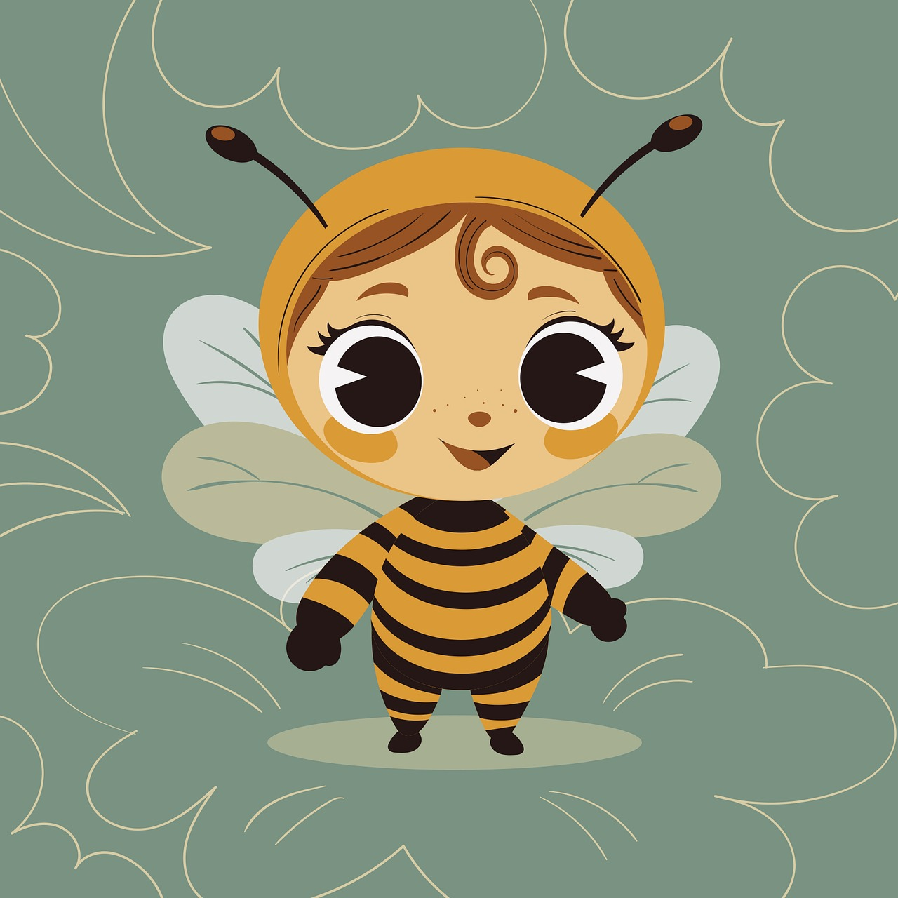

Break Free: It's your time to shine.
- Self recovery
- Your mental health and inner peace are important
- Always choose you
A guide to finding yourself, build up your positive energy.
A guide to finding yourself, build up your positive energy.
Bee well: your self-care journey is the sweet nectar that nourishes not just you, but the entire hive of life.Embrace Your Inner Bee
Sign up today for a daily dose of self-love and inspiration.
#SelfCareJourney🌿💚💕